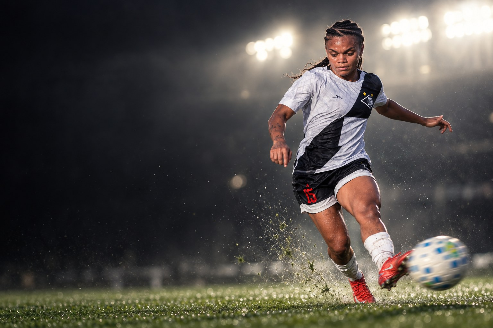
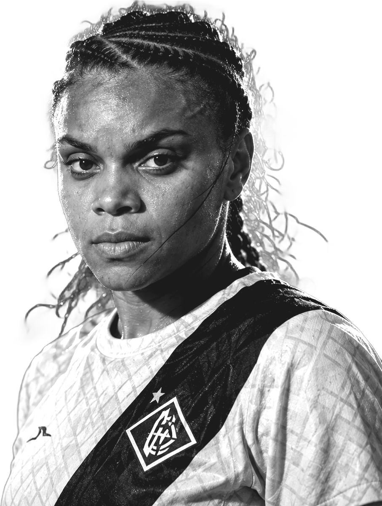
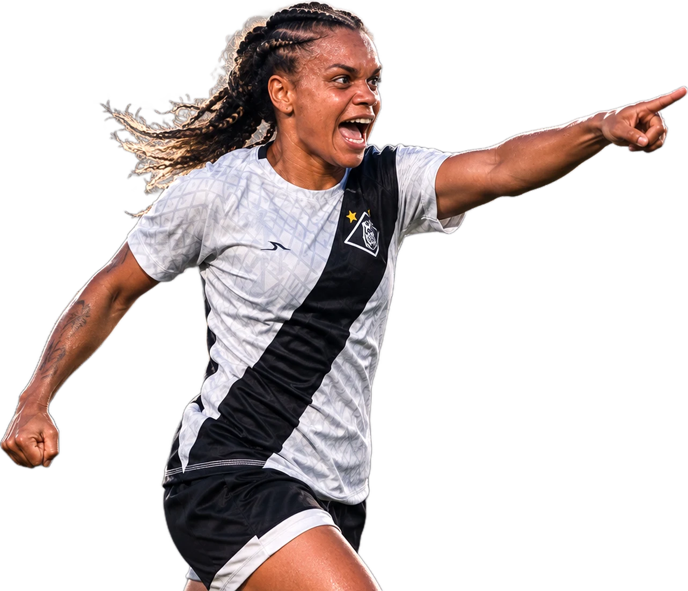
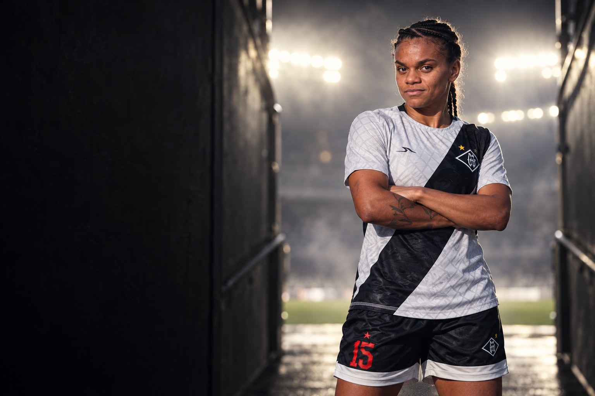
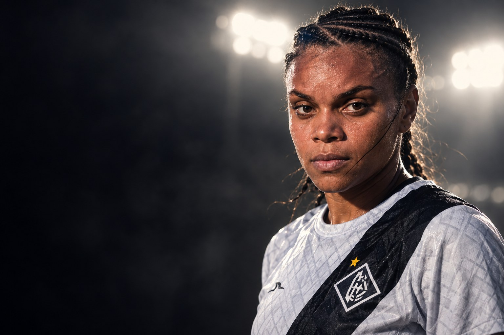
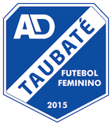
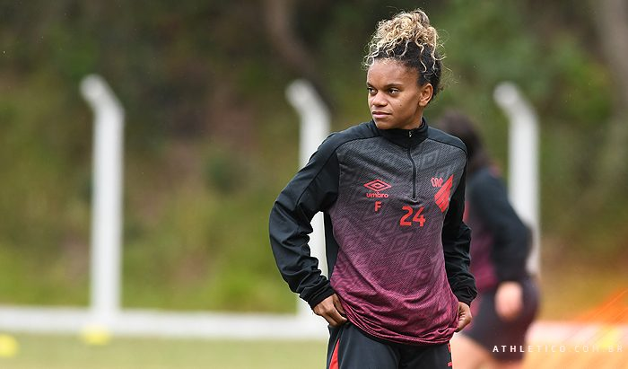
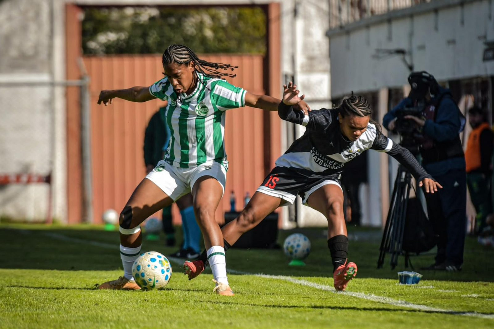
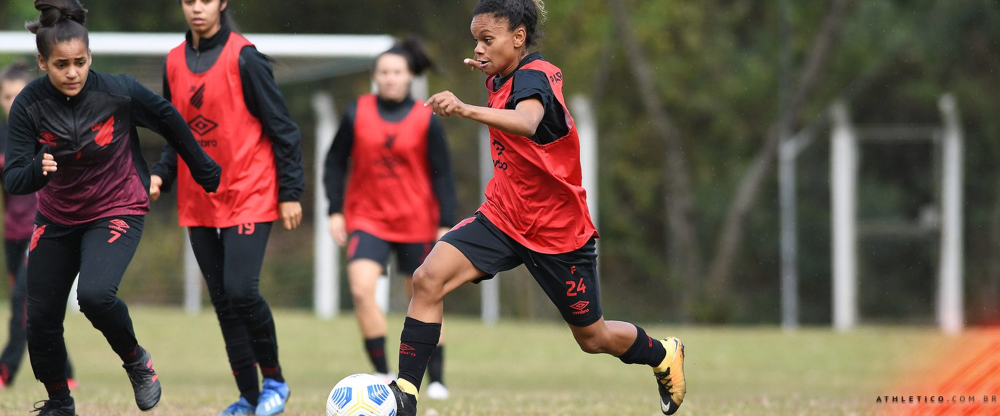
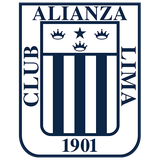

Mixto
Clube atual
21 jogos · 3 gols




Sobre
Joyce Amara Custódio é futebolista profissional e atua como ponta direita. Clube atual: Mixto.

“Vi um time com a posse de bola o tempo todo, tentando achar espaço, só que perdemos bastante oportunidades de fazer o gol. Não fomos efetivas na parte final. Mas, em questão de girar e soltar a bola, tocar e fazer um dois, fomos bem. O que faltou mesmo foi o gol.”Joycinha (Joyce Amara Custódio), Titular na estreia do Atlético-MG no Brasileiro A2, empate sem gols com o Vila Nova-ES, em março de 2020
Perfil
Carreira em números
Carreira

2025AD TaubatéClubes em destaque
21 jogos · 3 gols


11 jogos · 7 gols
Conquistas
Galeria


Currículo esportivo
| Temporada | Clube | País | Jogos | Gols | Assistências |
|---|---|---|---|---|---|
| 2026 | 21 | 3 | 2 | ||
| 2025 |  Alianza Lima | Peru | 3 | 0 | 0 |
| 2025 | AD Taubaté | 14 | 1 | 0 | |
| 2024 | 21 | 3 | 1 | ||
| 2023 | 7 | 2 | 0 | ||
| 2022 | 22 | 0 | 0 | ||
| 2021 | 11 | 7 | 0 | ||
| 2021 | 5 | 1 | 0 | ||
| 2020 | 12 | 1 | 0 | ||
| 2019 | 3 | 5 | 0 | ||
| 2019 | 12 | 2 | 0 | ||
| 2018 | 10 | 9 | 0 | ||
| 2018 | Osasco Audax | 28 | 0 | 0 | |
| 2017 | 1 | 1 | 0 | ||
| 2017 | 10 | 0 | 0 | ||
| 2016 | Centro Olímpico | – | – | – |
Jogos, gols e assistências conforme a base estatística Ogol. O clube atual segue o anúncio oficial do clube.
Na mídia
Contato profissional
Assuntos profissionais, comerciais e de carreira: fale com a X Soccer, que faz a gestão da carreira da atleta.
Mídia kit
International profile